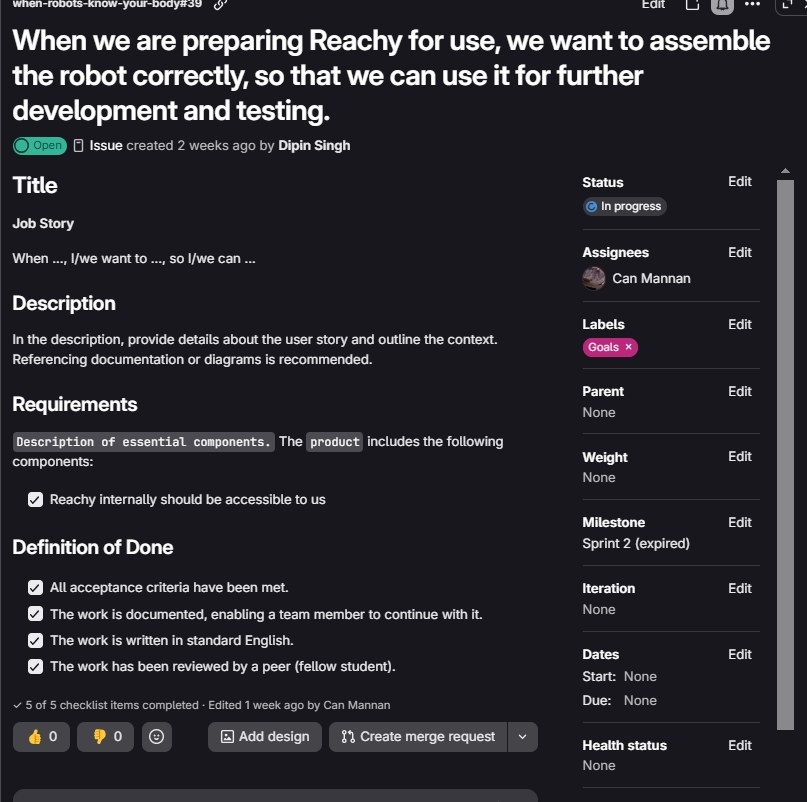
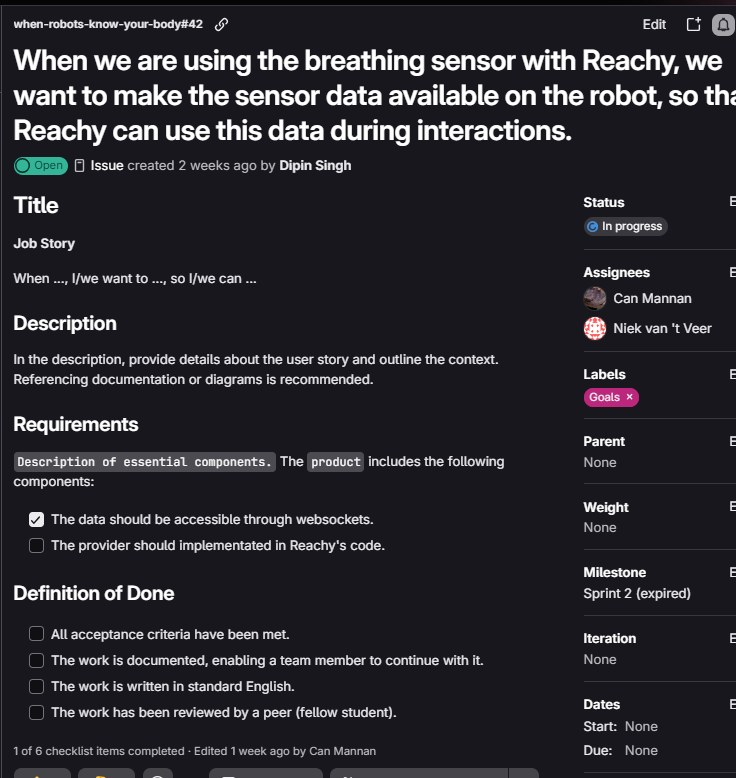

Sprint 2
DevLog Bio-Reachy
Waar gaat deze sprint over?
In Sprint 1 las ik de ademriem uit met een USB-dongle en een pc. Daar kwam ik niet verder mee voor het project, want Reachy moet mijn ademhaling zelf kunnen gebruiken. In Sprint 2 ga ik dat dus oplossen.
Dit zijn de drie doelen.
- Geavanceerde dataverwerking. De ruwe waarden van de riem omzetten in iets bruikbaars, zoals inademen, uitademen, pauze of stil, plus de frequentie en de diepte.
- De riem rechtstreeks uitlezen. Een ESP32 leest de riem uit, zodat de laptop dat niet meer hoeft te doen. Reachy kan dan antwoorden op de vraag “Hoe adem ik nu?”.
- Testen met mensen. Op het Society 5.0 festival laten we Reachy zien en leren we wat beter kan.
Mijn team
- Can (ik) doet de ademriem, de ESP32 en de ademtool in de Reachy-app.
- Rio doet de pulssensor. Zijn werk was mijn voorbeeld, en we maakten samen de eerste versie van de ademdata in de app.
- Dipin en Yusuf maakten de antenne- en hoofdbewegingen van de Mirror-modus.
- Yusuf en Niek schreven documentatie die ik gebruikte. Yusuf nam ook de testformulieren op het festival af.
- Bin Yu is de opdrachtgever (Digital Life, HvA). Hij bedacht de Mirror-modus.
- Claar is onze mentor.
Het begin van de sprint
De sprint begon op maandag 19 oktober. Op dinsdag 20 oktober, de dag voordat ik mijn Reachy bouwde, kreeg ik hem. Toen hebben we met Claar besproken wat er in deze sprint zou gebeuren. Daarna maakte ik met mijn team job stories in GitLab, waarbij ieder zijn eigen kreeg. Met zo’n job story kun je makkelijk branches maken.
Twee daarvan waren voor mij.
- Reachy bouwen. “When we are preparing Reachy for use, we want to assemble the robot correctly, so that we can use it for further development and testing.” Dit is pagina 1.
- De ademdata op de robot. “When we are using the breathing sensor with Reachy, we want to make the sensor data available on the robot, so that Reachy can use this data during interactions.” Dit zijn pagina 2 tot en met 6.


Tijdlijn
- di 20 okt. Ik krijg mijn Reachy. Overleg met Claar en job stories maken.
- wo 21 okt. Reachy bouwen (51 stappen, van 14:59 tot 20:13). Pagina 1
- do 22 okt. Buiten het project. Onderzoek naar het flashen van een e-paper prijskaartje. Pagina 11
- vr 23 okt. Een opdracht field testing, buiten het project. Pagina 10
- di 27 okt. Een kennisquiz, buiten het project. Pagina 10
- do 29 okt. Seminar Embedded Augmentation, buiten het project. Ik was discussiemoderator. Pagina 10
- vr 30 okt. Met Rio de Reachy-app opschonen en de eerste versie van
models.pyen de client maken. Ik begin echt met het uitlezen van de riem via Bluetooth. Pagina 2 en 4 - zo 1 nov. State, depth en rate gemaakt, de eerste mock van de ademriem en de start van de WebSocket. Pagina 3, 4 en 6
- ma 2 nov. Idee voor een betere mock, nog als concept.
- di 3 nov. Het uitlezen werkt helemaal, de ademtool staat in de app, de betere mock is toegevoegd en Reachy gaat aan met de app vanaf mijn laptop. Pagina 5, 6 en 8
- wo 4 nov. Society 5.0 festival in het Volkshotel. Pagina 9
- do 5 nov. Thuis, de app kon de robot niet vinden. Pagina 8
- di 10 nov. Met Claar in de les bespreken hoe we Reachy “dark” maken.
Hoe de keten werkt
De riem stuurt mijn ademhaling via Bluetooth naar de ESP32. De ESP32 rekent uit wat dat betekent en stuurt het via wifi door naar de Reachy-app op mijn laptop. De app heeft een ademtool, en daarmee kan Reachy mijn ademhaling opvragen.
Riem → ESP32 → WebSocket (wifi) → Reachy-app (laptop) → Reachy
Ik heb de pagina’s opgedeeld in kleine stukken. Elke pagina heeft een datum, mijn stappen en hoe ik problemen oploste.
Pagina's van deze sprint
- 1. Reachy bouwen
- 2. Riem uitlezen met de ESP32 (Bluetooth)
- 3. ESP32 naar de app (WebSocket)
- 4. State, ademfrequentie en diepte
- 5. De ademtool in de Reachy-app
- 6. Mockdata voor de ademriem
- 7. Netwerkproblemen
- 8. Verbinden met de echte robot
- 9. Society 5.0 festival
- 10. Seminar Embedded Augmentation (buiten het project)
- 11. E-paper prijskaartje flashen (eigen onderzoek)
- Afsluiting van Sprint 2